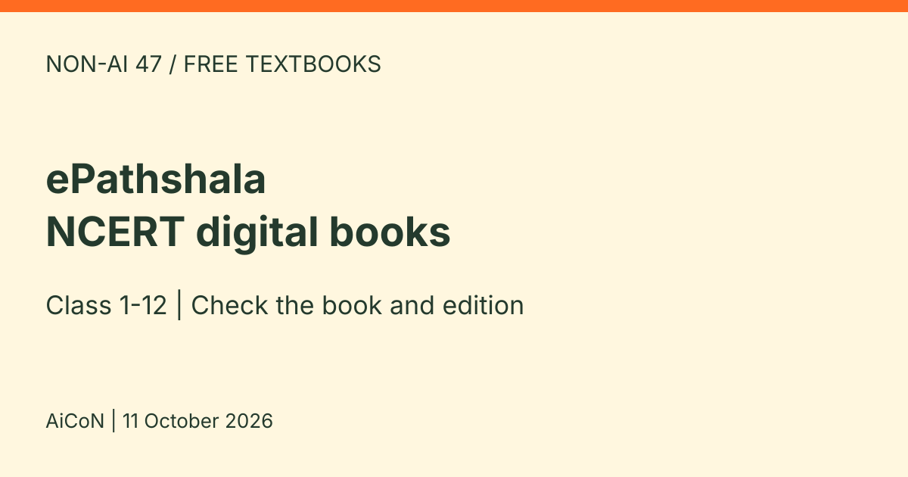

ePathshala: free NCERT textbooks for Class 1 to 12 in Hindi, English and Urdu
ePathshala is an app and web portal from the Ministry of Education and NCERT. NCERT's own accessibility page says it provides free access to NCERT books and e-content for students, teachers and parents, and that all NCERT textbooks for Class 1 to 12 are on the mobile app in Hindi, English and Urdu, as chapter-wise PDF downloads.

What can you do on ePathshala?
- Read NCERT eTextbooks on a phone or tablet (as epub) or on a laptop or desktop (as a flipbook)
- Find audio, video and other digital resources, plus material for teachers and parents
- Use features like zoom, bookmarks, highlights and notes, and listen to text with a text-to-speech app
- Find resources in Hindi, English and Urdu; check the particular book and edition rather than assuming every title is available in every language
Small and simple
The home page advertises an app size under 7 MB. We did not verify the current store version or installed size; downloaded books need extra storage. Check your device and the current app listing rather than treating this as a guaranteed storage requirement. It also lists the Android, iOS and Windows download links on its download page.
Listening and accessibility
NCERT's accessibility page links to read-aloud books and steps to turn on text-to-speech for NCERT textbooks in the app.
Free and India verdict
This is an Indian public education resource, and NCERT explicitly describes free access to books and e-content. Internet/mobile-data charges still apply. It is a reading and learning resource, not a school admission, exam registration or certificate service. We did not test a purchase, account or app installation.
A careful checklist
- Reach the app through the links on epathshala.nic.in or the official NCERT page.
- Choose your class, subject and language in the available resource list, then open the book. Check its title and edition before downloading.
- Use the chapter download option where offered. Download while on Wi-Fi if data is limited, then check that the chapter opens on your device before planning offline study.
- Check that the edition matches what your school uses.
Privacy and practical limits
Use only official portal/store links, not APK files from unknown sites. Read the selected store listing's developer, permissions and data-safety information before installation. We did not audit the app's privacy policy or data collection, so free access should not be read as a no-data-collection promise. Avoid sharing children's personal details or identity documents through unrelated forms or support requests.
Download availability does not itself grant permission to republish a whole textbook. Follow the resource's copyright and reuse terms. Keep a local copy of material you need, and check the current syllabus and book edition with your school. TTS pronunciation and reading order should be checked on the actual device, especially for diagrams and equations.
Frequently asked questions
Is it free?
NCERT's accessibility page says it gives free access to NCERT books and e-content. Check the app listing for anything else.
Is it the same as DIKSHA?
No. Both come from NCERT and the Ministry of Education, but they are separate platforms. See our DIKSHA guide for the other one.
Are all school-board books included?
The official claim is about NCERT textbooks, not every board, publisher or school workbook. Check your actual book and edition.
What changed since this post?
Published and sources checked on 11 October 2026. The portal currently displays 504 eTextbooks and 3,886 eResources; those counters can change. Official NCERT guidance confirms free access and chapter PDFs. We did not install the app, download a chapter or test TTS.
Sources: ePathshala home, NCERT accessibility page, ePathshala download page. Checked 11 October 2026. This is an AiCoN explainer, not a government publication.